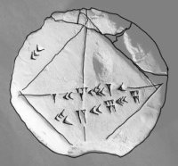

Yükleniyor...
Matematik sadece sayılardan ibaret değildir; evrenin dilidir. Bu site, Babil'den günümüze matematiğin büyüleyici serüvenini, sıkıcı olmayan bir dille anlatmak için tasarlandı.
Decimal > Binary & Hex
1.618 Oranını Hesapla
...
Babil matematiği, erken Sümerler döneminden MÖ 539'da Babil'in düşüşüne kadar Mezopotamya'da geliştirilen matematiği ifade eder.
Dicle ve Fırat vadileri arasındaki verimli topraklar, insan uygarlığının beşiğidir.
*Ünlü YBC 7289 Tableti (Kök 2 hesabı)*
Sümerler ve Babillilerin en önemli katkısı, çivi yazısıyla yazı sistemini geliştirmeleriydi; bu ilerleme, kayıt tutmayı ve bilginin nesilden nesile aktarılmasını mümkün kıldı. Kil tabletler üzerine kaydedilmiş bu kayıtların çoğu arkeologlar tarafından keşfedilmiş ve tercüme edilerek bu eski insanların günlük yaşamları hakkında bilgiler ortaya çıkarılmıştır.
Bu tabletler, modern tarihçilerin geçmişe inmelerine ve bu insanların gelişmiş matematiksel tekniklerini, yani daha sonraki Yunanlıların matematik alanındaki atlamasının temelini araştırmalarına olanak tanır. Bu gelişmiş uygarlığın matematiğini genellikle Babil matematiği olarak adlandırsak da, Sümerler ve Asurlular gibi diğer büyük kültürler de Bereketli Hilal'de gelişmiş bir uygarlığın oluşmasına katkıda bulunmuştur.
Babil Rakamları (Kamu Malı)
Babilliler, birler, onlar ve yüzler için semboller kullanarak sayıları yazmak için bir sistem geliştirdiler; bu da muhtemelen günlük yaşamlarında ondalık sistemi kullandıklarını gösteriyor. Bu sistem, büyük sayıları rahatça kullanmalarına ve tüm temel aritmetik işlemleri gerçekleştirmelerine olanak sağladı. Bununla birlikte, sıfır için bir rakam kullandıklarına dair hiçbir kanıt yok.
Ancak Sümerler de 60 tabanlı bir sayma sistemi kullanmışlardır; bu nedenle hala bir daireyi 360 dereceye bölüyor ve saatleri, dakikaları ve saniyeleri sayıyoruz. Bu altmışlık sistem, ağırlık ve ölçülerde, astronomide ve matematiksel fonksiyonların geliştirilmesinde kullanılmıştır. Örneğin, bir tablette 60²'ye kadar olan tüm sayıların kareleri listelenmiştir ve 60'tan büyük sayılar için altmışlık sayı sistemi kullanılmıştır - 64, 60+4 olarak, 81 ise 60+21 olarak yazılmıştır...
Pisagor üçlülerini listeleyen Babil tableti (Kamu Malı)
Sayıları sıralamak için konum kullanma fikri, konum ilkesi olarak bilinir ve bu tür bir sistemin bilinen ilk kullanımıdır; ondalık sistemimizin temelini oluşturur. Bu fikir, MS beşinci veya altıncı yüzyıla kadar kayboldu ve batı kültürü, matematiksel işlemler için karmaşık ve zor bir sistem olan hantal Roma sayı sistemini kullandı. Roma'nın sayı sistemi, sıfırı anlamış olabileceklerini ima eder, ancak daha fazla kanıt bulunana kadar bu büyük ölçüde varsayımsal kalır.
Bu 60 tabanlı sistem, Babillilerin kesirleri kullanmasına da olanak sağladı ve yarımı '30' (30 altmışta bir) ve çeyreği '15' (15 altmışta bir) olarak ifade ettiler. Bu sistem Yunanistan'a da yayıldı ve ondalık sistem matematikçiler için tercih edilen dil haline gelene kadar yüzyıllarca kesirleri ifade etmenin tercih edilen yolu oldu.
Altmışlık sistemin kullanılmasının kabul edilen nedeni, astronomiye dayanması ve Babillilerin mevsimlerin dönüşünü izlemek ve ekim için en uygun zamanları tahmin etmek için doğru takvimler geliştirme arzusudur; bu, güçlü bir tarım temeline sahip bir kültür için son derece önemlidir. Başlangıçta Babilliler bir yılda 360 gün olduğuna inanıyorlardı ve bu, sayı sistemlerinin temelini oluşturuyordu; bunu derecelere böldüler ve bu, güneşin gökyüzündeki günlük hareketini temsil ediyordu. Daha sonra bunu dereceleri dakikalara bölerek daireleri ölçmeye dönüştürdüler. Astronomi, geometri ve günü saatlere, dakikalara ve saniyelere bölme sistemimizin tamamı tarihin bu döneminden kaynaklanmaktadır.
Akkad Kraliyet Guru - Sümer ölçü birimlerini gösteriyor
Sümerler, Babilliler ve Fırat vadisinin diğer sakinleri, aritmetiğin temellerini, sayısal gösterimi ve kesirleri kullanarak şüphesiz ki bazı gelişmiş matematiksel ilerlemeler kaydettiler. Çalışmaları Yunanlılar tarafından benimsendi ve Yunanlıların, Anadolu'dan (Türkiye) Çin'e İpek Yolu boyunca yayılan fikirlerden Babil kültüründen matematiksel teknikler öğrenmiş olmaları muhtemeldir. Büyük İskender'in, bölgeyi fethettikten sonra Babil'den Aristoteles'e astronomik kayıtlar gönderdiği bilinmektedir.
Geometri alanında, derece sisteminin geliştirilmesinin dışında, Babilliler pek bir katkıda bulunmamış, kaba yaklaşımları tercih etmişlerdir ve binalarını inşa ederken geometrik teknikler kullandıklarına dair çok az kanıt vardır; deneme yanılma yöntemini tercih etmişlerdir. Elbette, bu gelişmiş kültür hakkında çok az şey bilindiğinden, matematiksel teknikleri hakkında daha fazla bilgi ortaya çıkaracak kanıtlar henüz ortaya çıkmamıştır.
Üniversiteye başlayıp akademik dünyaya, özellikle de bilgisayar programcılığı bölümüne adım attığımda kafamda bazı şeyler değişmeye başladı. Eskiden Lisedeyken "Sayısalcılar" diye genel bir kümemiz vardı; Fizik, Kimya, Biyoloji ve Matematik hepsi aynı torbadaydı bizim için. Hepsinde formül vardı, hepsinde işlem yapıyorduk, hepsinde sonuç buluyorduk. Ama işin mutfağına, yani tabiri caizse "kaynak kodlarına" indiğimde durumun hiç de öyle olmadığını fark ettim. Hatta dürüst olayım, bu konuyu araştırırken birkaç gece beynimin yandığını hissettim.
Matematik, diğer tüm pozitif bilim dallarından (Fizik, Kimya, Astronomi, Biyoloji vb.) çok keskin, hatta bıçak sırtı bir çizgiyle ayrılıyor. Bu fark, sadece dersin içeriğinde değil; gerçeğe ulaşma yönteminde, kesinlik anlayışında ve zamana karşı duruşunda gizli. Gelin, bir programcı adayı gözüyle, kahvemizi alıp bu derin farklara, biraz da "bizim dilimizden" yakından bakalım.
Fizik, Kimya veya Biyoloji gibi bilimler, literatürde "Deneysel" (Empirik) bilimler olarak geçer. Yani bu bilimler, gerçeği bulmak için doğaya muhtaçtır. Bir fizikçi yerçekimini anlamak için elmayı yere düşürmek zorundadır. Bir biyolog hücreyi anlamak için mikroskoba bakmak zorundadır. Yani dış dünyadan veri toplarlar. Yöntemleri "Tümevarım"dır. Parçaları izler, genele varmaya çalışırlar.
(Burada kendi bölümümden bir örnek vermem gerekirse; bu durum, bir kodun çalışıp çalışmadığını anlamak için sürekli "Run" tuşuna basıp deneme-yanılma yapmaya benziyor. Hata verirse düzeltirsin, vermezse "tamam çalışıyor" dersin.)
Ama matematik... Matematik laboratuvarında pahalı teleskoplar, patlayan deney tüpleri veya kobay fareler yoktur. Matematikçinin laboratuvarı kendi zihnidir. Matematik, doğaya bakmaz. Deney yapmaz. Matematik "Tümdengelim" yöntemini kullanır. Bir matematikçi, "Bir üçgenin iç açıları toplamı 180 derecedir" dediğinde, eline iletki alıp dünyadaki bütün üçgenleri tek tek ölçmesine gerek yoktur. Hatta bir tane bile ölçmesine gerek yoktur. Bunu mantıksal aksiyomlarla kağıt üzerinde ispatladığı (kanıtladığı) an, iş bitmiştir. Milyon yıl sonra Andromeda galaksisinde bir uzaylı da üçgen çizerse, o da 180 derece olacaktır. Sürpriz yoktur, "acaba" yoktur.
Bilim tarihi, aslında çöpe atılmış teorilerin devasa bir mezarlığı gibidir. Bu kötü bir şey değil, bilimin doğası bu. Bilim "yanlışlanabilir" olmak zorundadır. Bir zamanlar "Evrenin merkezi Dünya'dır" diyorduk, sonra "Pardon, Güneş'miş" dedik, sonra "O da değilmiş, merkez yokmuş" dedik. Newton Fiziği 300 yıl boyunca harikaydı, her şeyi açıkladığını sandık. Ama sonra Einstein diye bir adam çıktı, "Işık hızına yaklaşırsan Newton'ın kuralları patlar" dedi ve Görelilik Teorisini ortaya attı. Yani bilimde doğrular "geçicidir". Daha iyi bir açıklama gelene kadar geçerli olan "yamalardır".
(Bunu bizim yazılım dünyasına uyarlarsak; Fizik ve Kimya sürekli "Update" alan, versiyon yükselten (v1.0, v2.0) programlar gibidir. Sürekli bug'lar temizlenir, yeni özellikler eklenir.)
Ancak matematikte "güncelleme" diye bir şey yoktur. Pisagor Teoremi (a² + b² = c²), M.Ö. 500 yılında Antik Yunan'da ne kadar doğruysa, bugün benim bilgisayarımın ekran kartı hesaplamalarında da o kadar doğrudur, 5000 yıl sonra Mars kolonilerinde de o kadar doğru kalacaktır. Einstein fiziği değiştirebilir ama Pisagor'u yanlışlayamaz. Matematiksel bir ispat yapıldığında, o artık sonsuza kadar mühürlenmiş, zamanın ve mekanın ötesinde mutlak bir gerçektir. Bu yüzden matematik, bilimlerin en güvenilir limanıdır.
Diğer bilimler evrene göbekten bağlıdır. Evren yok olursa; inceleyecek madde kalmazsa Kimya biter, canlı kalmazsa Biyoloji biter, enerji ve hareket kalmazsa Fizik biter. Onlar, var olan fiziksel dünyayı açıklamaya çalışan muhabirler gibidir.
Matematik ise kendi evrenini kendi yaratır. Fiziksel dünyada "mükemmel çember" diye bir şey aslında yoktur. En pürüzsüz bilardo topuna bile elektron mikroskobuyla baksanız dağlar, vadiler, girintiler çıkıntılar görürsünüz. Yani doğada mükemmel geometri yoktur. Ama matematikçiler, zihinlerinde kusursuz, pürüzsüz çemberlerle işlem yaparlar. Doğada karşılığı olmayan şeyleri de (örneğin 4. boyut, 11. boyut veya sanal sayılar) kurgulayabilir ve üzerinde çalışabilirler.
(Açıkçası burası biraz beyin yakıyor ama şöyle düşünün: Matematikçi, kurallarını (aksiyomlarını) kendisi yazdığı bir oyunun kurucusudur. Bir oyun motoru (Unity veya Unreal Engine) gibidir. Yerçekimini sıfır yapabilir, zamanı geri alabilir. Fizikçi ise o oyunun içindeki oyuncudur, kurallara uymak zorundadır.)
Tüm bu "bağımsızlık" ve "farklılık" iddialarına rağmen, garip bir şekilde diğer bilimler matematik olmadan nefes bile alamazlar. Fizikçi doğayı anlamak için formüllere, Kimyacı reaksiyon hızını ölçmek için türeve, Biyolog bakteri popülasyonunu hesaplamak için üslü sayılara muhtaçtır. Galileo'nun o meşhur lafına geri dönüyoruz: "Evren matematik diliyle yazılmıştır."
Biz yazılımcıların tabiriyle durumu şöyle özetleyebilirim: Diğer bilimler (Fizik, Kimya, Astronomi vb.) bilgisayardaki uygulamalar (software) gibidir. Instagram gibi, Photoshop gibi... Sürekli güncellenirler, değişirler, bazen hata verirler, bazen çökerler. Matematik ise bu uygulamaların üzerinde çalıştığı İşletim Sistemi (Windows, Linux, MacOS) ve hatta donanımın çalışma mantığıdır (Binary Kod). Uygulamalar değişebilir ama alttaki mantıksal yapı (1'ler ve 0'lar, Mantık kapıları) sabittir ve hatasız çalışmak zorundadır.
Bütün bu araştırmalarımın sonunda, cevabını hala tam veremediğim o büyük felsefi soruyla baş başa kaldım. Bu soru, matematiği diğerlerinden ayıran son noktadır.
Bir biyolog yeni bir balık türü "keşfeder", çünkü o balık zaten okyanusta yüzüyordur. Bir mühendis yeni bir motor "icat eder", çünkü o motoru sıfırdan yapmıştır. Peki matematikçi ne yapar? Pisagor teoremini, Pi sayısını veya asal sayıları biz mi uydurduk (icat ettik), yoksa onlar evrenin dokusunda, yıldızların tozunda zaten şifreli bir şekilde var mıydı da biz mi bulduk (keşfettik)?
(Şahsi fikrimi sorarsanız; biz matematiği icat etmedik. O, bizden önce de oradaydı, bizden sonra da orada olacak. Biz sadece evrenin kaynak kodlarını okumayı öğrenen meraklı öğrencileriz. Ve bu sitede yapmaya çalıştığım şey de tam olarak bu: O kaynak kodlarını biraz olsun anlaşılır kılmak.)
İnsanlık tarihinin entelektüel evrimi incelendiğinde, matematiksel düşüncenin gelişimi ile medeniyetin soyutlama kapasitesi arasında doğrudan ve yadsınamaz bir korelasyon olduğu görülür. Günümüz pedagojik yaklaşımlarında ve popülist bilim söylemlerinde sıkça karşımıza çıkan, matematiği sürekli olarak "günlük hayat problemleri" (real-world problems) üzerinden meşrulaştırma çabası, esasen bu disiplinin ontolojik doğasına ve insan zihninin potansiyeline yapılmış büyük bir haksızlıktır. Matematiğin öğrenilmesinde ve içselleştirilmesinde günlük hayat pratiklerinin zorunlu bir ön koşul olduğu varsayımı, bilimin tarihsel gerçekliğiyle örtüşmeyen, indirgemeci ve faydacı (utiliteryan) bir yaklaşımdır. Bu makale, matematiğin neden fiziksel gerçeklikten bağımsız, kendine referanslı (self-referential) bir mantık sistemi olarak ele alınması gerektiğini; soyutlamanın, genellemenin ve aksiyomatik düşüncenin, bakkal hesabının çok ötesinde, evrensel bir hakikat arayışı olduğunu derinlemesine analiz edecektir.
Matematiği "hayatın içinden" örneklerle sınırlamak, okyanusu bir bardak suya sığdırmaya çalışmak gibidir. Bardaktaki su okyanustan bir parçadır, evet; ancak okyanusun derinliğini, basıncını, ekosistemini ve devasa akıntılarını bardaktaki suya bakarak anlamak imkansızdır. Benzer şekilde, matematiğin Hilbert Uzayları, Kategori Teorisi veya Topoloji gibi derin sularını, günlük hayatın sığ kıyılarında gezinerek keşfetmek mümkün değildir. Zihin, somut olanın prangalarından kurtulduğu an, matematiğin asıl evrenine giriş yapar.
Antik Yunan filozofu Platon'un meşhur Mağara Alegorisi, matematik eğitimi için kusursuz bir analoji sunar. Mağaranın duvarına yansıyan gölgeler, bizim günlük hayatta karşılaştığımız fiziksel nesnelerdir (elma, armut, köprü, bina). Ancak bu gölgelerin kaynağı olan "gerçek nesneler", yani İdealar, saf matematiksel formlardır. Bir mühendisin yaptığı köprü, kusurlu bir fiziksel yapıdır ve zamanla yıkılabilir; ancak o köprünün statiğini hesaplayan diferansiyel denklemler, zaman ve mekandan bağımsız, ebedi ve mutlak doğrulardır. Matematiği iyi öğrenmek, duvardaki gölgelerle (günlük hayat problemleri) oyalanmayı bırakıp, mağaranın dışına çıkarak güneşe (saf teoriye) bakabilme cesaretini gerektirir.
Eğitim bilimlerinde "Cognitive Load Theory" (Bilişsel Yük Teorisi) bağlamında yapılan araştırmalar, matematiği aşırı bağlamsallaştırmanın (contextualization), öğrenci üzerinde "gereksiz bilişsel yük" (extraneous cognitive load) oluşturduğunu göstermektedir. Şöyle bir örnek düşünelim: Bir öğrenciye ikinci dereceden denklemleri öğretmek istiyorsunuz. Eğer soruyu "Bir topun havaya atılması, rüzgar direnci ve yer çekimi ivmesi" üzerinden sorarsanız, öğrenci matematiksel işlemden önce fiziksel senaryoyu, topun hareketini ve hikayeyi anlamlandırmak zorunda kalır. Bu durum, zihnin asıl odaklanması gereken cebirsel manipülasyonlardan (diskriminant hesabı, kök bulma) uzaklaşmasına neden olur. Oysa saf matematiksel form ($ax^2 + bx + c = 0$) sunulduğunda, zihin doğrudan mantıksal yapıya odaklanır ve saf aklın gücünü kullanır. Soyutlama, zihni gereksiz detaylardan arındırma sanatıdır ve matematik, bu sanatın zirvesidir.
Nobel ödüllü fizikçi Eugene Wigner, 1960 yılında yazdığı "The Unreasonable Effectiveness of Mathematics in the Natural Sciences" (Matematiğin Doğa Bilimlerinde Makul Olmayan Etkinliği) başlıklı makalesinde, matematiğin en şaşırtıcı özelliğine dikkat çeker: Tamamen zihinsel bir oyun olarak, hiçbir pratik amaç güdülmeden geliştirilen teoriler, yüzyıllar sonra fiziksel evrenin en derin sırlarını açıklayan anahtarlar haline gelmektedir. Bu durum, matematiğin günlük hayattan türetilmediğini, aksine günlük hayatın (ve evrenin) matematiksel bir altyapıya sahip olduğunu gösterir.
Tarih, "günlük hayatta ne işe yarayacak?" sorusunu sormadan çalışan dehaların, medeniyeti dönüştüren keşifleriyle doludur:
Riemann Geometrisi ve Görelilik: 19. yüzyılda Bernhard Riemann, Öklid geometrisinin aksiyomlarını değiştirerek, eğri yüzeyler üzerinde geçen hayali bir geometri kurguladı. O dönemde bu çalışmanın hiçbir "günlük hayat" karşılığı yoktu; tamamen entelektüel bir egzersizdi. Ancak 60 yıl sonra Albert Einstein, Genel Görelilik Teorisi'ni formüle ederken, evrenin bükülmüş uzay-zaman dokusunu açıklamak için Riemann'ın bu "soyut ve işe yaramaz" görünen matematiğine muhtaçtı. Eğer Riemann "bakkal hesabıyla" uğraşsaydı, bugün GPS teknolojisine veya evren anlayışımıza sahip olamayabilirdik.
Sayılar Teorisi ve Kriptografi: Godfrey Harold Hardy, hayatı boyunca matematiğin herhangi bir savaşta veya ticarette kullanılmayacak kadar "saf" olmasıyla övünmüştü. Özellikle asal sayılar üzerine yaptığı çalışmaların hiçbir pratik değeri olmadığına inanıyordu. Fakat bugün, internet bankacılığından askeri iletişime kadar her türlü dijital güvenliği sağlayan RSA şifreleme algoritmaları, Hardy'nin o "saf" sayılar teorisi üzerine kuruludur.
Matematiği bir dil olarak kabul edersek, günlük hayat problemleri bu dilin semantiğini (anlam bilimini), saf matematik ise sentaksını (söz dizimini/gramerini) oluşturur. Bir dili iyi öğrenmek için, o dilin kurallarını, yapısını ve içsel mantığını kavramak gerekir; sadece "turist gibi" cümle kalıpları ezberlemek (bağlamsal öğrenme) kişiyi o dilde yetkin kılmaz. Matematikte de durum farksızdır. Bir türev işlemini sadece "hız-zaman grafiğinin eğimi" olarak öğrenen bir öğrenci, türevi sadece fiziksel bir hareketle sınırlar. Oysa türev, bir fonksiyonun anlık değişim oranıdır ve bu fonksiyon ekonomide marjinal maliyet, biyolojide bakteri üreme hızı veya bilgisayar bilimlerinde bir yapay zeka algoritmasının optimizasyonu olabilir.
Bu nedenle, matematiğin operasyonel yetkinliği, bağlamdan bağımsız sembolik manipülasyon becerisine dayanır. $f(x)$ sembolü, ne bir elmadır ne de bir arabadır; o, dönüştürülebilen, evrilebilen ve başka fonksiyonlarla etkileşime girebilen soyut bir varlıktır. Bu varlığı "günlük hayata" indirgemek, onun potansiyelini öldürmek demektir. Matematik eğitimi, öğrenciye sembollerin dansını öğretmelidir, sembollerin temsil ettiği nesnelerin hikayesini değil.
Matematiğin günlük hayattan kopmak zorunda olduğu en belirgin nokta, sonsuzluk kavramıdır. Fiziksel dünyada, bildiğimiz kadarıyla "sonsuz" bir nesne yoktur. Günlük hayatta sonsuz elma, sonsuz zaman veya sonsuz uzunlukta bir ip ile karşılaşamayız. Ancak matematik, Georg Cantor'un Kümeler Teorisi ile gösterdiği üzere, sadece sonsuzluğu değil, "sonsuzlukların büyüklüklerini" (kardinalite) bile sınıflandırabilir. $\aleph_0$ (Alef-sıfır) ve Süreklilik Hipotezi gibi kavramlar, insan zihninin fiziksel gerçekliği aşarak metafiziksel bir aleme dokunmasıdır.
Benzer şekilde, $\sqrt{-1}$ (sanal sayı birimi $i$), günlük hayatta "yoktur". Hiçbir banka hesabında $3i$ TL göremezsiniz veya manavdan $\sqrt{-1}$ kilo domates isteyemezsiniz. Eğer matematiği günlük hayata endekslersek, sanal sayıları ve buna bağlı olarak Karmaşık Analizi (Complex Analysis) müfredattan çıkarmamız gerekir. Oysa ki, bugün elektrik mühendisliğinden kuantum mekaniğine, sinyal işlemeden aerodinamiğe kadar modern teknolojinin bel kemiği, bu "gerçek olmayan" sayılar üzerine kuruludur. Bu paradoks, matematiğin gerçeği açıklamak için gerçeğin ötesine geçmek zorunda olduğunun en büyük kanıtıdır.
Son olarak, matematiğin bir sanat dalı olarak ele alınması gerekliliği vurgulanmalıdır. Bir müzisyen notaları öğrenirken "bu nota günlük hayatta ne işime yarayacak?" diye sormaz; armoninin güzelliği kendi başına bir amaçtır. Matematikçiler için de Euler Özdeşliği ($e^{i\pi} + 1 = 0$), içerdiği derinlik ve estetik sadelik nedeniyle, herhangi bir pratik uygulamadan bağımsız olarak değerlidir. Beş temel matematiksel sabiti ($0, 1, e, i, \pi$) tek bir eşitlikte birleştiren bu formül, evrensel bir şiirdir. Matematiği iyi öğrenmek, bu şiirsel yapıyı hissedebilmektir.
Bertrand Russell bu durumu şöyle ifade etmiştir: "Matematik, doğru bir şekilde ele alındığında, sadece hakikati değil, yüce bir güzelliği de barındırır; heykel sanatının soğuk ve sade güzelliği gibi, insan doğasının zayıf yanlarına hitap etmeyen, müziğin veya resmin göz alıcı süslerinden arınmış, ancak son derece saf ve sadece en büyük sanatın gösterebileceği o sert mükemmelliğe sahip bir güzellik."
Özetle, "günlük hayat problemleri", matematiğin devasa sarayına girmek için kullanılan bir paspas olabilir, ancak sarayın kendisi değildir. Matematiksel düşünce, insan zihninin yerçekiminden kurtulup, saf mantığın atmosferinde süzülme yeteneğidir. Eğitim sistemleri, öğrenciyi sürekli yere (günlük hayata) çekmek yerine, onlara kanat takıp soyutlamanın göklerine yükseltmelidir. Gerçek kavrayış, $2+2=4$ hesabında değil, bu eşitliğin neden evrenin her köşesinde, her zaman ve her koşulda geçerli olduğunun apriori bilgisindedir. Bilim ve teknoloji, pragmatistlerin değil, hayalperest teorisyenlerin omuzlarında yükselir.
Giza Piramitleri
Yeryüzünde en esrarengiz yapılardan bir tanesi şüphesiz Mısır Piramitleridir. Nasıl yapıldığı hakkında birçok görüş ortaya atılsa da dönemin şartları göz önüne alındığında esrarengiz olaylar bizleri karşılamaktadır. Bu yazıda o esrarengizliğin matematiksel boyutları üzerinde duracağız. En az 4 bin yıllık olduğu tahmin edilen bu piramitler hakkında uzaylılar tarafında yapıldığı gibi bir iddia çok enterasan bir ispat yöntemi ile insanları inandırmaya çalışılmaktadır. Bu ispatların hepsini tartışacağız. Yıllarca birçok araştırmacının, maceraperestlerin, filozofların uğrak yeri haline gelmiş ve üzerinde belki yıllarca araştırma yapılmıştır. .
Piramitler bir geometrik eser niteliğinde insanoğlunu büyülemektedir. Üç önemli piramit Büyük Piramit, Giza Piramidi, Keops Piramidi Mısır’ın geniş arazilerinde tarihin en yüksek mimarisi unvanını kaybedeli fazla yıl olmamıştı. Aslında Platon’un akademisine yazdığı “Geometri bilmeyenler giremez – Asıl cümle: Kim ki geometri bilmiyor, içeri girmesin” ibaresini piramitlerin girişlerine yazmak gerekti. Aşağıda bahsedeceğimiz tüm matematiksel olgular Mısır Bilimler Akademisi tarafından onaylanmış gerçeklerin tam da kendisidir.
Mısır Piramitlerinin yükseklik, taban alanı ve yükselik katsayıları matematikte en önemli üç sabiti içerir. Bunlar pi, fi ve e sayılarıdır. Araştırmacı J.H.Cole yaptığı standart ölçümler sonucu 51 derecelik 51 saniyelik açı ile hesaplama yapmıştır.
Piramitler
Sonuçları görüyor musunuz? Çok garip ve esrarengiz. Yazıyı hazırlarken kendi kendime şunu sormadan devam edemiyorum. “Bundan 4 bin yıl önce bu nasıl matematik hesaplamaları nasıl yapılır? Okura bir soru daha “e” sayısı ile gösterilen bu sabit 1618 yılında bulunduğu matematik tarihi araştırma kaynaklarında yazılı olarak bulunur. Sizce de bu sayının varlığı ve tam olarak aynı sayı olması garip değil mi? Bence şimdiden şaşırmayın!
Büyük Piramidin başka bir matematiksel güzelliği pi sayısı ile ilgilidir. Piramidin tabanı eşit uzunlukta olduğundan dolayı yüksekliği hesaplamak için, Piramidin yüksekliğine eşit, bir çember alınır ve kareleştirilir. Oluşan çemberin çevresine yaklaşık bir kare hesaplanır ve yükseklik elde edilir. Bu aslında eskilerden beri gelen bir matematik sorusundan başka bir şey değildir. Hatırlayınız ki “Çemberi kareleştirmek” adlı birçok çalışma yapılmıştır. Bu nokta da bir esrarengiz olay yine karşımıza gelmektedir. Yukarıda anlattığımız tüm şeyler pi sayısının transandaltal bir sayı olduğunu göstermektedir. Ama pi sayısını Transandaltal bir sayı olduğunu 1882 yılında Lindemann göstermişti. Hayret verici!
Piramit geometrisini analiz etmenin bir diğer yolu, zemin düzlemine göre 45 derece döndürülmüş bir karedir. Diyagonal biçimde 555.5 feet yada 6666 inç çevre uzunluğuna sahiptir. Eğim açısının ise 51 derece 51 saniye olması ölçümün %99.8 gibi kesine yakın olmasına olanak sağlamaktadır.
Piramidin yüksekliği ise bu muazzam sayı ile sınırlanır. 0.0001 gibi bir hata yapılması halinde piramidin yükseliğinden kaynaklanan sorun ile hiçbir şekilde inşa edilemeyecektir. Taban içinde hayali olarak oluşan ve ölçümün bu şekilde yapıldığı düşünüldüğünde 2 çember 777 feet ve bir tanesi ise 7777 inçtir. Burada 7 sayısının bolca kullanılması ise farklı bir yorum getirecektir. Piramidin tabanındaki üçgensel bölgeye dünyanın tropikal günlerini gösteren ve 365.242 feet çapa sahip bir dünya sığacağı ise böyle bir hesaplamanın ancak uzaya gönderilen bir ölçüm aracının topladığı veriler ile gerçekleşeceğini göstermektedir. Peki bu hesap tam tamına nasıl yapıldı?
Bir sonraki ilginç hesaplama ise taban uzunluğu dünyanın çapı ile aynı uzunluğa sahip bir piramit tabanı arasında olan ilişkidir. Ünlü filozof ve yazar John Michell büyük piramidin yükselikliğini kullanarak Ay ve Dünya arasındaki mesafeyi tam olarak ölçmüştür. Ayı, dünyanın üstüne teğet bir biçimde getirmiş ve ölçüm yapmıştır. İşte şu şekilde,Özellikle platonik cisimlerlerden de yararlanıldığını gösteren birkaç delil de elimizde bulunmaktadır. Platonik cisimlerden aynı sınıfa ait olan icosahedron ve dodecahedron yansıması ölçümde kullanılmaktadır. Peki Nasıl? İcosahedron dodecahedron’un ters yüzüdür. Bir madalyon misali… Siz eğer bu platonik cisimlerden birini ters çevirdiğinizde şekil tamamlanır. Aşağıda fotoğrafta korelasyona bakarak bu iki katmandaki açısal derecelerin toplamının 10080 eşit olduğunu göreceksiniz ki bu sayı Dünya-Ay arasındaki uzaklığın aynısıdır ( “mil” cinsinden )
Bu noktada Sylvia Brown “Dünyanın Sırları ve Gizemleri” adlı kitabında bu yapıların insanlar tarafından yapılmasının güçlüğü anlatılmaktadır. Dolayısıyla bu yazıdan şu teoriyi çıkarıyoruz.
"İnsanlık, teknolojiyi ve bilimi eskiden çok üst düzey bir şekilde kullanıyordu, ancak yaşanan büyük felaketler sonucu tüm teknoloji sıfırlandı."
Antik Yunan matematiği, M.Ö. 7. yüzyıldan M.S. 4. yüzyıla kadar Doğu Akdeniz havzasında yaşayan Yunan düşünürler tarafından geliştirilen matematiksel bilgi birikimini ifade eder. Kendisinden önceki Mısır ve Babil matematiğinin pratik ve deneysel yaklaşımından farklı olarak, Antik Yunan matematiği, bilgiyi soyut bir düzeyde ele alıp mantıksal çıkarımlara ve kesin ispatlara dayandıran ilk sistemdir. Bu dönem, matematiğin yalnızca günlük gereksinimleri karşılayan bir araç olarak kullanılmasından, bağımsız bir düşünce disiplini ve evreni anlamaya yönelik bir alan olarak ele alınmasına geçiş sağlamıştır. “Matematik” terimi ise bu dönemde, “öğrenilmesi gereken şey” veya “eğitimle ilgili” anlamlarını taşıyan Yunanca “mathema” sözcüğünden türetilmiştir.
Antik Yunan matematiği, kendine özgü soyutlama düzeyine ulaşmadan önce, Mezopotamya ve Mısır gibi kadim uygarlıkların pratik bilgi birikiminden beslenmiştir. Özellikle Miletli Thales ve onun ardıllarının Mısır’a gerçekleştirdiği ziyaretler, geometri ve astronomi alanlarındaki bilgilerin Yunan dünyasına taşınmasına zemin hazırlamıştır. Mısırlılar, üçgenlerin alanını hesaplamak veya Nil taşkınlarından sonra arazi sınırlarını yeniden belirlemek gibi uygulamalı ihtiyaçlara yanıt ararken; Babilliler ise karmaşık sayı sistemleriyle takvim düzenlemeleri ve ticari hesaplamalar yapmışlardır.
Ancak Yunan düşünürleri, bu bilgileri yalnızca uygulama düzeyinde ele almakla yetinmemiş, aksine onları sorgulayarak altında yatan genel ilkelere ulaşma çabasına girmişlerdir. Böylece ilk kez matematik, yalnızca bir araç olmaktan çıkarak, evrensel doğruların izini süren bağımsız bir bilgi alanı hâline gelmiştir. Bu yaklaşım, hem geometrik hem de aritmetik düşüncenin soyut bir temele oturmasını sağlamıştır.
Antik Yunan matematiğinin gelişimi genel olarak iki ana evrede ele alınabilir: Klasik Dönem ve Helenistik Dönem. Klasik Dönem’de, Pythagoras gibi filozoflar aracılığıyla sayıların mistik boyutu vurgulanırken, Eukleides (Öklid) gibi isimler sayesinde sistematik aksiyomatik yaklaşımlar ortaya çıkmıştır. Helenistik Dönem’de ise İskenderiye gibi bilim merkezlerinde Arşimet ve Apollonios gibi matematikçiler daha karmaşık problemlerle ilgilenmiş, matematiği ileri düzey teorik hesaplamalara taşıyan çalışmalar gerçekleştirmiştir. Tarihsel kayıtlar ve mevcut yazılı eserler, Antik Yunan matematiğinin yalnızca önceki uygarlıkların (örneğin Mısır ve Mezopotamya) matematiksel birikimini devralmakla kalmayıp, aynı zamanda mantık, kanıta dayalı çıkarım ve soyutlama ilkelerini sistemli biçimde geliştirerek sonraki yüzyılların bilimsel düşünce biçimlerinin şekillenmesinde etkili olduğunu göstermektedir.
Antik Yunan matematiğinin en önemli katkılarından biri, matematiksel düşüncede “ispat” kavramının yerleşmesidir. Önceki medeniyetler, bir kuralın birçok durumda geçerli olduğunu gözlemleyerek onu doğru kabul etme eğilimindeydi; bu yaklaşım, tümevarımsal akıl yürütmeye dayanıyordu. Ancak Yunan matematikçiler, bir önermenin yalnızca belirli örneklerde değil, her koşulda geçerli olduğunu göstermek için tümdengelimli akıl yürütme yöntemini benimsediler. Bu yaklaşım, matematikte kesinlik arayışının başlamasında bir dönüm noktasını temsil eder. Miletli Thales, bu yaklaşımın öncüsü olarak kabul edilir. Mezopotamyalılar, yarım daire içine çizilen belirli üçgenlerin dik açılı olduğunu gözlemlemişlerdi; fakat Thales, bunun tüm çap tabanlı üçgenler için geçerli olduğunu mantıksal adımlarla kanıtlamıştır. Bu yöntem, matematiği salt gözleme dayalı bir bilgi alanı olmaktan çıkararak, soyut ve evrensel ilkelerin sistematik olarak doğrulandığı bir disipline dönüştürmüştür.
Antik Yunan Matematiği - 1 (Yapay Zeka ile Oluşturulmuştur)
Bu süreç, aksiyom, postulat ve teorem gibi temel kavramların ortaya çıkmasına zemin hazırlamıştır. Aksiyomlar, doğruluğu apaçık kabul edilen ve ispat gerektirmeyen temel önermelerdir. Postulatlar ise belirli bir sistem içinde kabul edilen başlangıç varsayımlarıdır. Bu temeller üzerine inşa edilen matematiksel yapı, teoremler aracılığıyla mantıksal bir bütünlük kazanır. Bu sistematik yaklaşımın en olgun örneği, Öklid’in Elementler adlı eseridir. Bu eser, az sayıda aksiyom ve postulat kullanarak yüzlerce teoremi mantıksal bir sırayla kanıtlamış ve matematik tarihinde kalıcı bir model oluşturmuştur.
Antik Yunan matematiği, yalnızca teknik başarılarıyla değil, aynı zamanda matematiğe yaklaşım biçiminde oluşturduğu dönüşümle bilim tarihinde özgün bir yer edinmiştir. Mezopotamya ve Mısır gibi uygarlıklardan aktarılan pratik bilgi birikimi, Yunan düşünürler tarafından felsefi temellerle değerlendirilmiş ve sistematik bir yapıya kavuşturulmuştur. Bu süreçte farklı dönemlerde yaşamış birçok matematikçi, mantıksal ispat, oranlar kuramı, aksiyomatik sistem ve cebirsel notasyon gibi alanlarda önemli katkılar sunmuştur.
Miletli Thales, hem felsefe hem de matematik tarihinde adı ilk anılan figürlerden biridir. Mısır'da edindiği geometrik bilgileri İyonya’ya taşımış ve bu bilgileri soyut düşünceye dayalı bir biçimde değerlendirmiştir. Gölge uzunluklarının kullanılması yoluyla piramitlerin yüksekliğinin hesaplanması, gözleme dayalı veriler ile akıl yürütme süreçlerinin birlikte uygulanmasının bir örneğini oluşturur. Thales’e atfedilen önermeler arasında bir çemberin çap tarafından iki eş parçaya bölünmesi ve yarım daire içine çizilen üçgenin dik açılı olması gibi temel geometrik teoremler yer alır.
Sisamlı Pisagor, Güney İtalya’daki Kroton kentinde kurduğu okul aracılığıyla hem matematiksel hem de felsefi bir gelenek başlatmıştır. Pisagorcular, evrenin temel yapısının sayılarla açıklanabileceğini savunmuş ve “her şey sayıdır” anlayışını benimsemişlerdir. Müzikteki armonilerin basit sayısal oranlarla ifade edilebileceğini göstermeleri, bu yaklaşımı güçlendirmiştir. En çok bilinen katkısı olan Pisagor Teoremi, aynı zamanda irrasyonel sayıların ortaya çıkmasına ve bu durumun Pisagorcu sistemde krize yol açmasına neden olmuştur.
Platon, matematiği yalnızca sayısal işlemlerle değil, zihinsel gelişimle ilişkili felsefi bir etkinlik olarak değerlendirmiştir. Atina’da kurduğu Akademi’nin girişine “geometri bilmeyen giremez” yazdırması, matematiğe verdiği önemi yansıtır. Matematik, Platon için idealar dünyasına ulaşmada temel bir araçtır. Akademi’de yapılan çalışmalar, özellikle beş düzgün çokyüzlü (Platonik katılar) üzerine yoğunlaşmış ve doğa ile evrenin yapısı arasında bağ kurulmasına zemin hazırlamıştır.
Platon’un öğrencilerinden olan Knidoslu Eudoxus, irrasyonel sayıların doğurduğu krizi oranlar teorisi ile aşmıştır. Bu kuram, büyüklükleri sayılara bağlı olmadan karşılaştırmaya imkân tanımış ve böylece geometriyi sağlam bir kuramsal temele oturtmuştur. Eudoxus’un alan ve hacim hesaplarında kullandığı “tüketme yöntemi” ise, daha sonra integral hesabın gelişimine öncülük etmiştir.
İskenderiyeli Öklid, Elementler (Stoikheia) adlı yapıtıyla matematik tarihinde sistematik düşüncenin öncüsü olmuştur. Tanımlar, aksiyomlar ve postulatlar üzerine kurulu olan bu eser, yüzlerce teoremi mantıksal sırayla ispatlamaktadır. Yaklaşık iki bin yıl boyunca matematik eğitiminde temel kaynak olarak kullanılan Elementler, Batı düşünce tarihinde mantıksal ispatın simgesi hâline gelmiştir.
Siraküza’da yaşamış olan Arşimet, antik dünyanın en üretken matematikçilerinden biri olarak kabul edilir. Tüketme yöntemini ustalıkla kullanarak parabolik alanları ve küre hacimlerini hesaplamış, Pi (π) sayısının yaklaşık değerini dar bir aralıkta belirlemiştir. Bu çalışmalar, yüzyıllar sonra gelişecek diferansiyel ve integral hesap için temel teşkil etmiştir.
İskenderiye Kütüphanesi’nin yöneticisi olan Eratosthenes, Dünya’nın çevresini gölge uzunlukları ve meridyen açı farklarını kullanarak oldukça doğru bir biçimde hesaplamıştır. Sayı teorisine katkısı ise, asal sayıları ayıklamak için geliştirdiği “Eratosthenes Kalburu” yöntemidir; bu yöntem, günümüzde hâlâ öğretilen temel sayma araçlarındandır.
Pergeli Apollonios, Konikler adlı eseriyle elips, parabol ve hiperbol gibi eğrilerin tanımlarını ve özelliklerini sistematik biçimde açıklamıştır. Bu eğriler, daha sonra Kepler ve Newton’un gezegen hareketlerini açıklarken başvurduğu geometrik temelleri oluşturmuştur.
Antik Yunan Matematiği - 2 (Yapay Zeka ile Oluşturulmuştur)
Diophantus, Antik Dönem’in geç evresinde cebirsel düşüncenin gelişiminde önemli bir rol oynamıştır. Arithmetica adlı eserinde, tam sayılarla çözülebilecek cebirsel denklemler üzerine çalışmış, cebirsel notasyonun erken örneklerini geliştirmiştir. Bu denklemler, günümüzde “Diophantus denklemleri” olarak anılmakta ve modern cebirin öncüsü sayılmaktadır.
Antik Yunanlar başlangıçta, sayıları temsil etmek amacıyla kelimelerin baş harflerine dayanan "Herodianik" ya da "akrofonik" adı verilen sistemi kullanmışlardır. Bu sistemde, sayıları ifade eden sözcüklerin ilk harfleri sayı sembolü olarak atanmıştır. Örneğin, “pente” (beş) sözcüğünün baş harfi olan Π harfi 5’i, “deka” (on) sözcüğünün baş harfi Δ harfi ise 10’u temsil etmekteydi. Bu sistem özellikle küçük sayılar için işlevsel olsa da daha büyük sayıların gösteriminde karmaşık hâle gelmiştir.
Zamanla Yunanlar, harflerin doğrudan sayısal değerlere karşılık geldiği daha gelişmiş bir gösterim biçimi olan alfabetik (İyonya) sayı sistemini benimsemişlerdir. Bu sistemde Yunan alfabesinin 24 harfi ile birlikte üç ek harf kullanılarak birden 900’e kadar olan sayılar ifade edilmiştir. Örneğin, α = 1, β = 2, ι = 10, κ = 20 gibi harflere karşılık gelen değerler kullanılmıştır. Bu yöntemle her sayı, harflerin bir araya getirilmesiyle yazılmıştır. İyonya sistemi, hem bilimsel hesaplamalarda hem de ticari kayıtlarda yaygın biçimde kullanılmıştır.
Antik Yunan matematikçileri, yalnızca teorik kuramlarla değil, aynı zamanda belirli geometrik problemleri çözmeye yönelik çabalarıyla da dikkat çekmişlerdir. Bunlar arasında en çok bilinen üç klasik problem, yalnızca pergel ve cetvel kullanılarak çözülmeye çalışılmış ve yüzyıllar boyunca matematiksel ilgi odağı olmuştur:
Bu üç problemin, yalnızca pergel ve cetvel kullanılarak çözülemeyeceği, ancak 19. yüzyılda modern cebir ve soyut matematik yöntemleriyle kesin olarak ispatlanabilmiştir. Bununla birlikte, bu problemlere getirilen çözüm denemeleri sırasında konik kesitler gibi birçok yeni geometrik ve cebirsel kavram geliştirilmiş; bu da matematiksel düşüncenin sınırlarının genişlemesine katkı sağlamıştır.
Matematik kelimesini duyduğumuzda çoğumuzun zihninde beliren imgeler genellikle birbirine benzerdir: Soğuk ve gri okul binaları, kara tahtalar üzerinde uçuşan karmaşık formüller, sınav kağıtlarında bir türlü sonucuna ulaşamadığımız "x" bilinmeyenleri ve belki de o derinden gelen "Bu benim gerçek hayatta ne işime yarayacak?" sorusu... Oysa matematiği sadece okul sıralarına hapsedilmiş sıkıcı bir ders olarak görmek, okyanusu sadece bir bardak sudan ibaret sanmak gibidir. Çünkü matematik, insan icadı soyut bir işkence yöntemi değil, evrenin ta kendisidir.
Galileo Galilei'nin yüzyıllar önce söylediği, "Evren, matematik diliyle yazılmış devasa bir kitaptır" sözü, aslında romantik bir betimleme değil, bilimsel bir gerçektir. Bir ayçiçeğinin tohum dizilişindeki spirallerden, gezegenlerin yörüngesindeki kusursuz elipslere; bir salyangoz kabuğunun kıvrımlarından, akıllı telefonlarımızdaki piksellere kadar her şey, bu dilin harfleriyle yazılmıştır. Eğer bu dili okumayı bilmiyorsanız, evrenin sayfaları arasında sadece resimlere bakarak kaybolursunuz. Peki, insanlık bu dili nasıl çözdü? Bu muazzam sistem nasıl doğdu?
Tarihi, modern dünyadan, şehirlerden ve teknolojiden binlerce yıl geriye saralım. Henüz yazının, paranın, hatta tekerleğin bile olmadığı zamanlara... İnsanoğlu için hayatın tek bir amacı vardı: Hayatta kalmak. Matematik, bir bilim dalı olarak değil, işte bu vahşi dünyada hayatta kalma çabası olarak, saf bir ihtiyaçtan doğdu.
Bir kabile üyesi olduğunuzu hayal edin. Mağaranızdan çıktınız ve sürünüzdeki hayvanları otlatmaya götürüyorsunuz. Sayı saymayı bilmiyorsunuz, "50" veya "100" gibi kavramlar zihninizde yok. Ancak akşam mağaraya döndüğünüzde, sabah götürdüğünüz hayvanların hepsinin geri dönüp dönmediğini bilmek zorundasınız. Ya birini kurt kaptıysa? Ya biri uçurumdan düştüyse? Bunu fark edemezseniz, kabileniz aç kalabilir.
İşte tam bu noktada, insanoğlunun soyut düşünme yeteneği devreye girdi. Atalarımız, "birebir eşleme" yöntemini keşfettiler. Belki ceplerinde tablet bilgisayarlar yoktu ama hayvan kemiklerinin üzerine çentikler atarak ilk veritabanını oluşturdular. Mağaradan çıkan her hayvan için kemiğe bir çizik attılar, akşam dönen her hayvan için o çiziğe dokundular. Boşta kalan bir çizik varsa, bir hayvan eksik demekti. Arkeologların bulduğu Ishango Kemiği gibi bulgular, matematiğin aslında "aç kalmama sanatı" olarak başladığını bize kanıtlıyor.
İnsanlık avcı-toplayıcı yaşamı bırakıp tarım toplumuna geçtiğinde, sorunlar da karmaşıklaşmaya başladı. Bu karmaşanın merkezi ise Antik Mısır'dı. Mısır medeniyeti, varlığını Nil Nehri'ne borçluydu. Nehir, kurak çölün ortasında hayat veriyordu ama aynı zamanda büyük bir kaosun da kaynağıydı. Her yıl belirli dönemlerde Nil taşıyor, tarlaları sular altında bırakıyor ve en önemlisi, insanların arazilerini ayıran tüm sınır çizgilerini siliyordu.
Sular çekilip çamur deryası ortaya çıktığında, köylüler arasında büyük kavgalar başlıyordu: "Benim tarlam şuradaki hurma ağacından başlıyordu, senin sınırın burasıydı!" Bu sınır anlaşmazlıkları, hem sosyal barışı tehdit ediyor hem de Firavun'un vergi toplama sistemini bozuyordu. Çünkü ne kadar toprağınız varsa, o kadar vergi ödemeliydiniz.
Bu kaosu çözmek için "Harpedonaptai" (İpi Gerenler) adı verilen, belki de tarihin ilk mühendisleri sahneye çıktı. Ellerinde, belirli aralıklarla düğümler atılmış uzun ipler vardı. Bu ipleri kullanarak arazide kusursuz dik üçgenler (bugün bildiğimiz 3-4-5 üçgeni) oluşturuyor ve sınırları milimetrik hassasiyetle yeniden çiziyorlardı. Kelime kökeni Yunanca "Geo" (Yer) ve "Metron" (Ölçüm) kelimelerinden gelen Geometri, işte bu çamurlu tarlaların ortasında, sırf insanlar birbirini öldürmesin ve devlet işleyebilsin diye doğdu.
Aynı dönemlerde Mezopotamya'da, bugünkü Irak topraklarında yaşayan Babilliler ise gözlerini topraktan ziyade gökyüzüne dikmişti. Tarım yapacakları en doğru zamanı, nehirlerin taşma vakitlerini ve mevsim döngülerini anlamak için Güneş'i, Ay'ı ve yıldızları takip etmek zorundaydılar. Bu gözlemler, muazzam bir matematiksel birikimi beraberinde getirdi.
Babilliler, bugün bizim günlük hayatta kullandığımız 10'luk sistem (parmak hesabı) yerine, çok daha esnek ve güçlü olan 60'lık taban sistemini (seksajessimal sistem) kullanıyorlardı. Peki neden 60? Çünkü 60 sayısı, matematikteki "süper sayılardan" biridir; 2, 3, 4, 5, 6, 10, 12, 15, 20 ve 30'a kalansız bölünebilir. Bu özellik, ticaret ve astronomi hesaplamalarında onlara büyük kolaylık sağlıyordu.
Bugün kolumuzdaki saate baktığımızda 1 saatin 60 dakika olması, 1 dakikanın 60 saniye olması veya bir dairenin 360 derece olması, bize o günlerden, Babil kulelerinin tepesinden kalan bir mirastır. Farkında olmadan, binlerce yıl öncesinin matematiğini her gün bileğimizde taşıyoruz.
Mısırlılar ve Babilliler matematiği muazzam bir ustalıkla kullandılar. Piramitler inşa ettiler, gök haritaları çıkardılar. Ancak onların matematiği her zaman "pratik" amaçlıydı. "Bu formül çalışıyor mu? Evet. O zaman kullan." mantığındaydılar. "Neden çalışıyor?" sorusu pek sorulmuyordu.
Tarih sahnesi Antik Yunan'a döndüğünde ise Thales, Pisagor, Öklid ve Arşimet gibi vizyoner düşünürler, matematiği inşaatın tozundan ve pazar yerinin gürültüsünden ayırıp, zihinsel ve felsefi bir sanata dönüştürdüler. Onlar için matematik, sadece iş görmek için değil, evrenin mutlak doğrularına ulaşmak içindi.
İşte bu dönemde "İspat" (Kanıt) kavramı doğdu. Bir teoremin doğruluğunu, elimize mezura alıp ölçmeden, sadece saf akıl yürütme (mantık) yoluyla kanıtlamak... Öklid'in yazdığı "Elementler" kitabı, sonraki 2000 yıl boyunca matematiğin kutsal kitabı kabul edildi. Yunanlılar matematiği soyutlaştırdı ve onu sonsuzluğa uzanan bir düşünce sistemi haline getirdi.
Batı dünyası Roma İmparatorluğu'nun çöküşüyle Orta Çağ karanlığına gömülürken, matematik meşalesini Doğu dünyası devraldı. Hindistan ve İslam coğrafyasındaki matematikçiler, insanlık tarihinin belki de en büyük, en devrimci buluşunu yaptılar: Sıfır.
Düşünmesi bile zor olan bir kavram: "Hiçlik" ve "Yokluk" için bir sembol yaratmak. Roma rakamlarını düşünün (I, V, X, L, C, M)... İçinde sıfır yoktur. Bu yüzden Romalılar asla karmaşık matematiksel işlemler yapamaz, bugünkü gibi teknolojiler geliştiremezdi. Sıfırın sisteme dahil edilmesi, matematiğin prangalarından kurtulması demekti.
Bağdat'taki efsanevi "Beyt'ül Hikme"de (Bilgelik Evi) çalışan Harezmi, bu yeni sayı sistemini kullanarak Cebiri (Al-Jabr) sistemleştirdi. Bilinmeyenlere "şey" dedi (bugünkü x). Karmaşık denklemleri çözülebilir hale getirdi. Bugün tüm dijital dünyanın, yapay zekaların ve algoritmaların temeli, o günlerde atılan bu adımlara dayanmaktadır. Zaten "Algoritma" kelimesi de Harezmi'nin isminin (Algoritmi) batı dillerindeki telaffuzundan gelmektedir.
Tarih boyunca bu zincir hiç kopmadı. Newton ve Leibniz'in değişim matematiğini (Kalkülüs) bulmasıyla sanayi devrimi başladı; Alan Turing'in matematiği mantıkla birleştirmesiyle bilgisayarlar doğdu. Bugün Mars'a gönderilen bir robotun yörüngesinden, Spotify'ın size önerdiği şarkıya kadar her şey, binlerce yıl önce atılan o çentiklerin, çamurlu tarlalarda gerilen iplerin ve gökyüzüne bakılarak yapılan hesapların bir sonucudur.
Matematik, sadece formüllerden ibaret değildir. Matematik, insanın kaosla dolu bir evrende düzen arayışıdır. Belirsizliğe karşı verdiğimiz en büyük savaştır. Ve bu site, işte bu muazzam serüvenin kapılarını aralamak, o formüllerin arkasındaki insan hikayelerini sizlere sunmak için tasarlandı.

Geliştirici & Tasarımcı
Okul Numarası: 256502059
Bu proje kapsamında, matematiğin yalnızca formüllerden ibaret olmadığını göstermek amacıyla bir web sitesi geliştirdim. Kodlama becerilerimi kullanarak hazırladığım bu sitede, matematiğin tarihsel gelişimi, diğer bilimlerle olan ilişkisi ve düşünsel temelleri sade ve anlaşılır bir dille ele alınmaktadır. Amacım, matematiği ezberlenen bir ders olmaktan çıkarıp arkasındaki mantığı ve insan hikâyesini ortaya koymaktır.
Bölüm: Bilgisayar Programcılığı